NAVIGATION
TOP of Page
MAIN Page
HOME Page
PREV Page
NEXT Page
ON THIS PAGE
MAP
MURRAY TOWNS
Echuca
INLAND TOWNS
Tongala
Kyabram
Stanhope
Rushworth
Rochester
Lockington
RIVERINA AREAS
Albury-Wodonga
Federation Council
Berrigan Shire
North-West
Campaspe Shire
Moira Shire
Shepparton G.C.
Benalla R.C.
Indigo Shire
Silos & Waterways
|
MAP
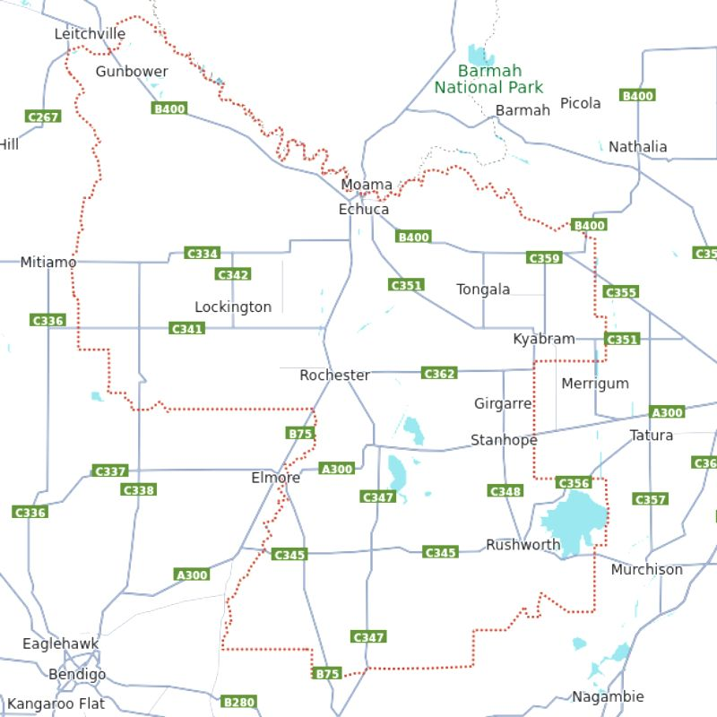
Map of the Campaspe Shire
TOP
MAIN
HOME
PREV
NEXT
MURRAY TOWNS
Echuca, VIC is a town on the banks of the Murray and Campaspe Rivers in Victoria, Australia. The
border town of Moama is adjacent on the northern side of the Murray River in NSW. Echuca is the
administrative centre and largest settlement in the Shire of Campaspe with a population of 15,056,
and the population of the combined Echuca and Moama townships is 22,568.
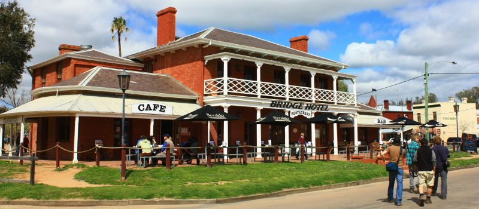
Echuca Bridge Hotel at 1 Hopwood Place
By Nick Hewson - https://www.flickr.com/photos/nickhewson/5008627646/,
CC BY 2.0, https://commons.wikimedia.org/w/index.php?curid=115338182
Link to Echuca
Port of Echuca Discovery Centre, VIC explores the story of Australia's pioneering
spirit and learn how Australia's inland river system connected a fledgling colony to its growing
cities and the outside world. Enjoy the story of the power of steam and the working saw mill plus
the meticulously restored Echuca Wharf with it's magnificent red gum riverbank walkways.
Paddlesteamer Cruises on the Murray River are a delightful and nostalgic way to experience the
charm of river travel. There are river cruises with lunch or dinner, so you can enjoy a scenic
journey and a delicious meal at the same time.
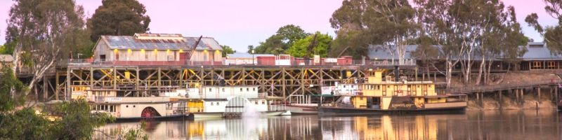
Paddlesteamers at 57 Murray Esplanade, Echuca VIC
Link to Port Echuca
TOP
MAIN
HOME
PREV
NEXT
INLAND TOWNS
Tongala, VIC is an agriculturally driven and predominantly dairy focused town with a population
of 1,926, located 25 kilometres from Echuca. Tongala has become well known for its street art, war
memorial, hay bale trail and other historical and creative pursuits. On walls around town can be
seen the Tongala Murals, many painted by local artist Murray Ross, which show the history of the
dairy industry and Tongala.
Tongala is home to significant industry including CopRice, McColls Transport and HW Greenham
and Sons. Sunrice operates a CopRice plant that employs thirty staff in a state of the art stockfeed
mill, established in 1989, with a capacity to produce up to 100,000 tonnes of stockfeed.
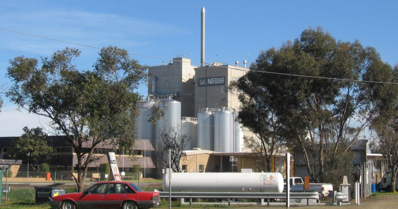
Tongala Nestle Factory
By I, Mattinbgn, CC BY-SA 3.0
https://commons.wikimedia.org/w/index.php?curid=2442900
Link to Tongala
TOP
MAIN
HOME
PREV
NEXT
Kyabram, VIC is the second-largest town in Campaspe Shire, situated between Echuca and
Shepparton and close to the Murray River, Goulburn River, Campaspe River and Waranga Basin. It
has a population of 7,331 people and provides services to a district population of around 16,000.
The district is dependent on the primary industries of dairying and fruit orchards. Henry Jones IXL,
a subsidiary of SPC Ardmona, operate a plant in the town, manufacturing IXL jams. The town
provides engineering, financial advisors, solicitors and accounting services to the district as
well as cold storage and specialist dairy services. Kyabram also boasts a family owned Camel dairy unique
to Australia. Nestlé (Tongala), Southern Processing Ltd and Fonterra (Stanhope) all have food processing plants nearby.
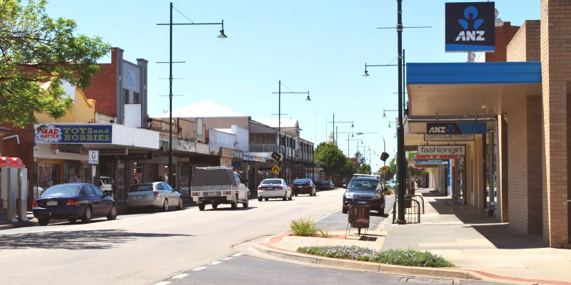
Allan Street, Kyabram
(c) By Mattinbgn (talk · contribs) - Own work, CC BY 3.0,
https://commons.wikimedia.org/w/index.php?curid=22203578
Link to Kyabram
Kyabram Fauna Park, VIC is at 75 Lake Drive. Visitors can expect to see a range of Australian
animals, including echidnas, Tasmanian devils, koalas, dingoes, wombats, cockatoos, emus and
more. There is also a new reptile enclosure and a cafe with views over the meerkat enclosure, a
signature move of Zoos Victoria. As you enter the park, grab a map and some bags of food to hand
feed some of the animals, such as the kangaroos.
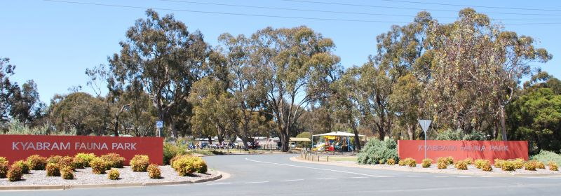
Kyabram Fauna Park Entrance at 75 Lake Drive, Kyabram
(c) Mamma Knows Melbourne
Link to Fauna Park
TOP
MAIN
HOME
PREV
NEXT
Stanhope, VIC has a population of 828 and sits on the Midland Highway between the two major
regional cities of Shepparton and Bendigo. It relies heavily on its dairy production and farming. A
large dairy processing plant lies in the centre of the town. Services in the town include a general
convenience store, a hotel, a lawn bowling club and tennis courts. Local landmarks include Lake
Cooper and Loch Garry and other towns nearby include Girgarre and Tatura and Echuca.
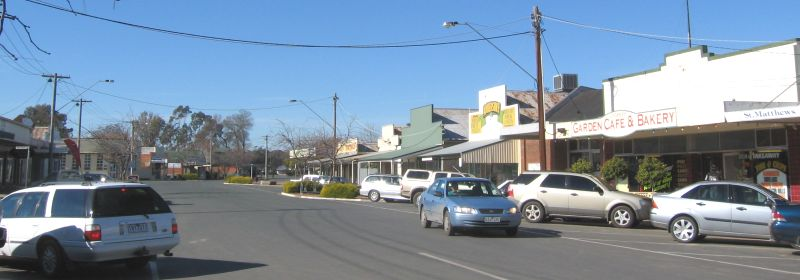
Stanhope Main Street
By I, Mattinbgn, CC BY-SA 3.0,
https://commons.wikimedia.org/w/index.php?curid=2443071
Link to Stanhope
TOP
MAIN
HOME
PREV
NEXT
Rushworth, VIC Rushworth has a population of 1,335. It was established during the Victorian gold
rush in 1853. The goldfields became no longer viable due to the underground water table and were
closed during the gold rush. Rushworth's main street is wide and elegant with historic buildings on
either side and a huge median strip. It must be one of the most impressive main streets in rural
Victoria. Today Rushworth is a service centre which was once a thriving and bustling goldmining town.
It retains its original charm and is surrounded by interesting smaller goldrush towns.
Link to Rushworth
High Street Heritage Walk High Street came into existence in 1853 and was declared an Urban
Conservation Area of Special Significance by the National Trust in 1982. Today the best thing any
visitor can do is take a walk along the street and carefully read the 'Walk Through Time'
Community Project plaques on many of the buildings. They offer a unique opportunity to
experience what the street was like in the heyday of the goldrushes.
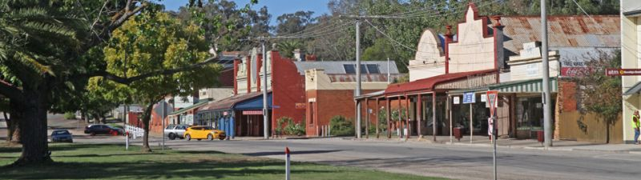
Rushworth High Street
By Mattinbgn - Own work, CC BY-SA 3.0,
https://commons.wikimedia.org/w/index.php?curid=12639105
Rushworth Museum is at the intersection of High and Parker Streets, located in the former
Rushworth Mechanics Institute. The 'Walk Through Time' plaque explains that the building was
constructed in 1913 to replace the original 1897 building. It was originally used as "a lending
library for miners and tradesmen, the new institute also included a billiard's room surrounded by a
raised platform for spectators." Today it is used by the Rushworth Historical Society and contains
over 4000 items connected with local history. It is open on Saturday 10.00am.-noon and Sunday
11.00am-3.00pm.
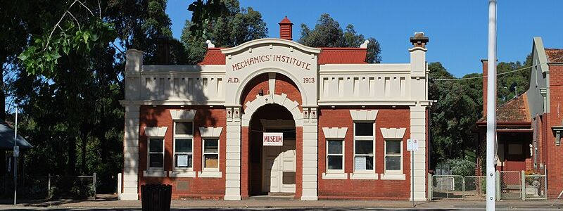
Rushworth Museum, Previously the Mechanics Institute
Link to Museum
Rushworth State Forest is a 33,000ha reserve south of Rushworth which consists of red
gum, red ironbark, red stringybark, yellow gum and grey box eucalypts, mallee used for eucalypt production
and, in spring, wildflowers and orchids. Today the forest fauna includes over 100 bird species,
echidna, possums, kangaroos, wallabies and wallaroos. It is excellent for bushwalking although,
extensively scoured for gold in the 19th century, it still attracts optimistic gold fossickers.
There is a good downloadable brochure by clicking on the link below.
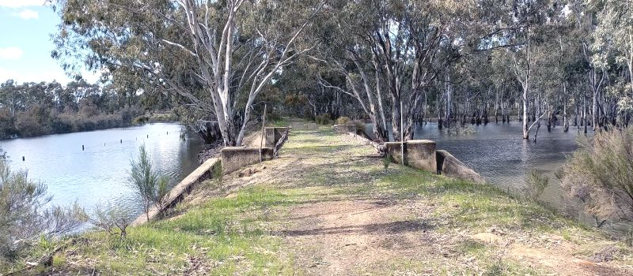
Rushworth to Murchison via Murchison Box Ironbark Rail Trail
Link to Forest
TOP
MAIN
HOME
PREV
NEXT
Rochester, VIC has a population of 3,154 with a mixture of rural and semi-rural communities on
the northern Campaspe River, between Bendigo and the Murray River port of Echuca. Agriculture
plays an important part in the economy of Rochester. Primary agriculture includes dairy, tomatoes,
cattle and sheep. There are also some grain and seed farms. There are also several other smaller
industries. The town has its own railway station.
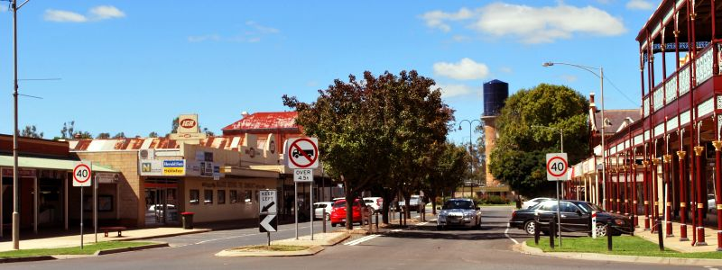
Rochester Gillies Street
By Mattinbgn (talk · contribs) - Own work, CC BY 3.0,
https://commons.wikimedia.org/w/index.php?curid=18850018
Link to Rochester
Lockington, VIC has a population of 808 and has one hotel, a school, three churches and a small
range of shops. The district features an extensive network of irrigation channels and these are said
to feature the giant "Loch Ness Yabby". A heritage complex and museum were opened in 1997.
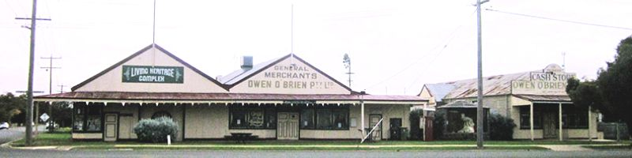
Lockington Living History Complex
Link to Lockington
TOP
MAIN
HOME
PREV
NEXT
|